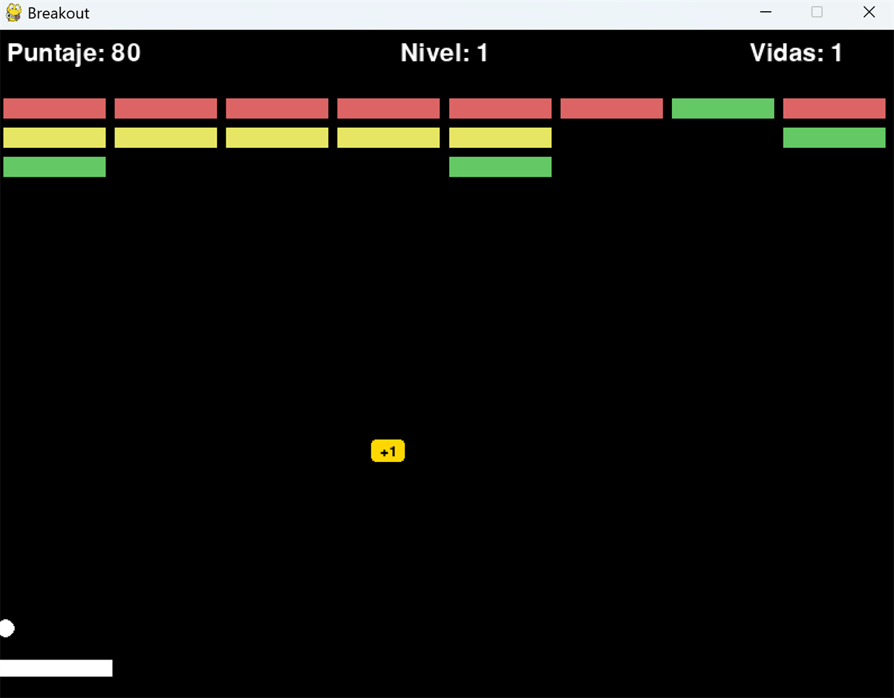

Breakout — juego de arcade en PythonBreakout — arcade game in Python
Clon del clásico rompe-bloques, desarrollado desde cero de forma iterativa. Fue mi primer proyecto de programación completo: empecé con una ventana y una pelota que rebota, y lo fui creciendo hasta un juego con niveles, power-ups y puntajes.
A clone of the classic brick-breaker, built from scratch iteratively. It was my first complete programming project: I started with a window and a bouncing ball and grew it into a game with levels, power-ups, and scoring.
- Hecho con: Python 3.11 y Pygame
- Built with: Python 3.11 and Pygame
- Incluye: programación orientada a objetos (paleta, pelota, bloques y power-ups como clases), detección de colisiones, máquina de estados (menú / juego / pausa / game over), múltiples niveles cargados desde archivos de texto, efectos de partículas y sonido, power-ups (paleta ancha, multi-pelota, pelota lenta, vida extra), sistema de vidas, dificultad progresiva y guardado de mejores puntajes en JSON.
- Includes: object-oriented design (paddle, ball, bricks, and power-ups as classes), collision detection, a state machine (menu / play / pause / game over), multiple levels loaded from text files, particle and sound effects, power-ups (wide paddle, multi-ball, slow ball, extra life), a lives system, progressive difficulty, and high-score persistence in JSON.
- Qué aprendí: cómo se estructura un game loop, POO aplicada, manejo de estados y assets, y diseñar niveles como datos externos en lugar de código.
- What I learned: how a game loop is structured, applied OOP, handling states and assets, and designing levels as external data instead of code.
Jugar en el navegadorPlay in the browser · Código en GitHubCode on GitHub